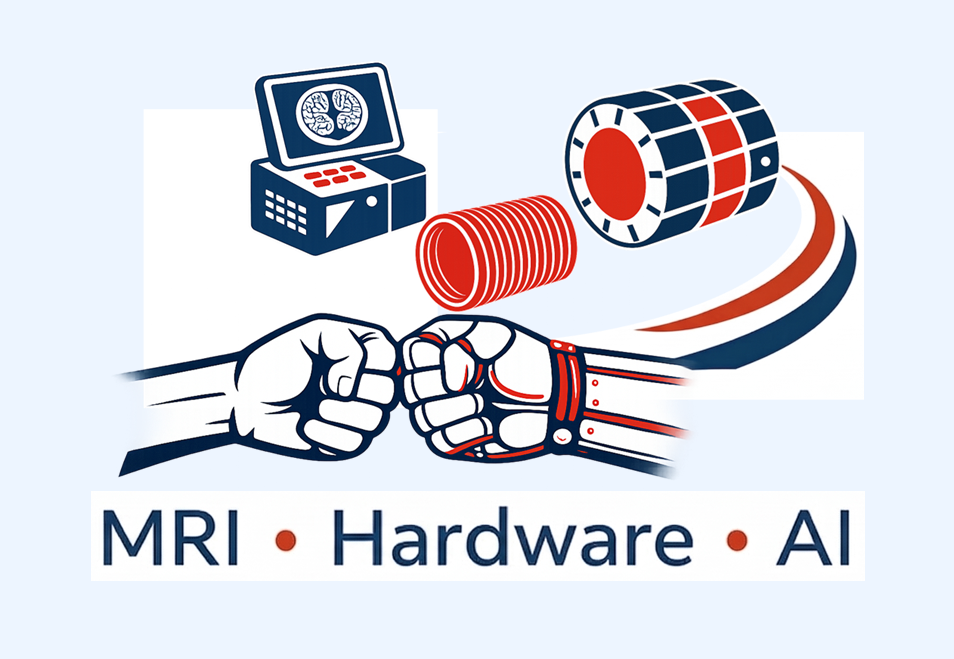
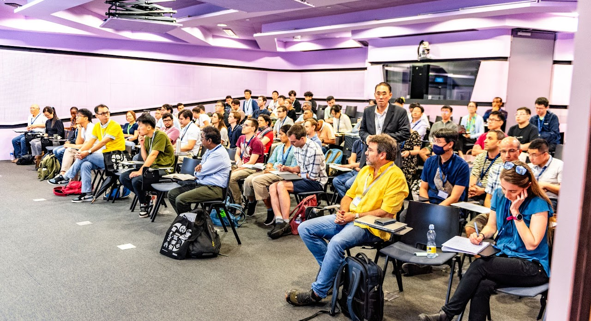
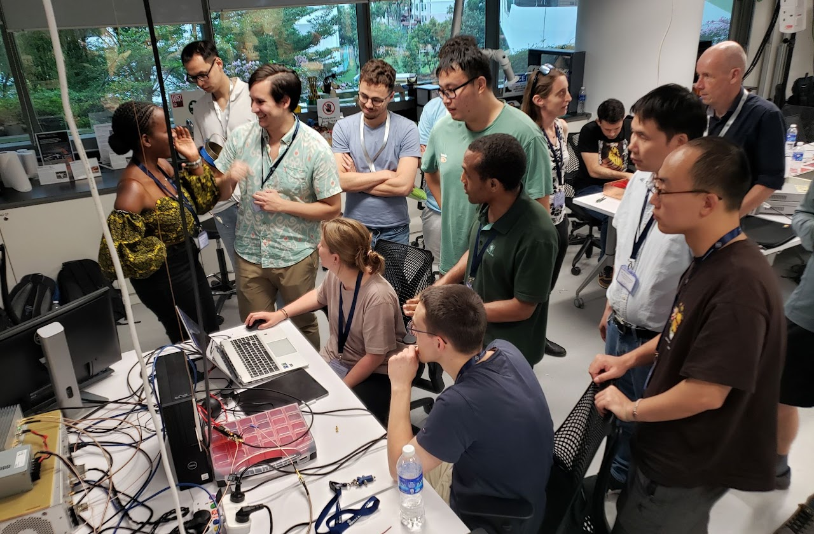
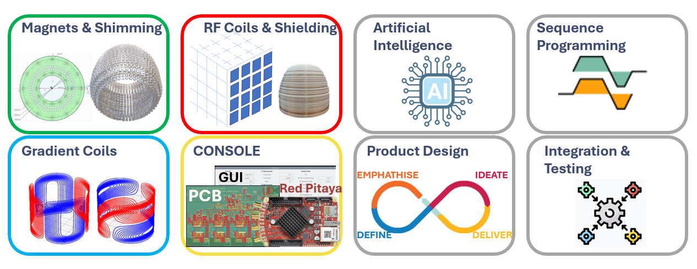
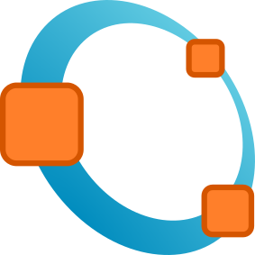
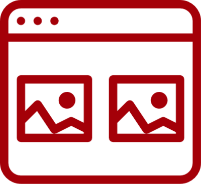
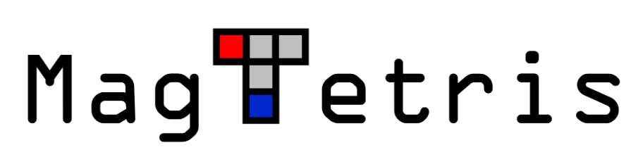
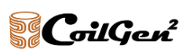
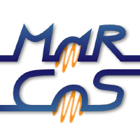

Beginner Track
Designed for participants who are new to MRI or want a stronger foundation in a specific technical area.
- Lectures and guided tutorials
- Hands-on practical exercises
- Core concepts, tools, and essential skills
A hands-on event to help people design, build, and improve portable MRI hardware while connecting engineers, researchers, mentors, and students.



Building together, solving a big picture. Each team focuses on a critical subsystem. Together, all combine to form a complete portable MRI.

portableMRI NerdFest-2 is built around eight technical themes, each representing a key subsystem of an open-source portable MRI system. Participants join a theme, work in small teams, and contribute toward a final integrated demonstration.
Participants state their preferred technical themes. Assignments prioritize first choices, then second choices, while keeping team sizes balanced.
Each theme has Beginner and Advanced tracks, matched to participants' background, confidence, and prior MRI or engineering experience.
Each track may contain multiple teams of about five participants. Teams stay within their theme throughout the event.
Teams develop, test, and validate their subsystem so it can connect with the other themes for the Day 4 system demonstration.
Designed for participants who are new to MRI or want a stronger foundation in a specific technical area.
Designed for participants with relevant knowledge or experience who want to work directly on harder engineering problems.
Explore the complete NerdFest toolkit for scientific computing, circuit and mechanical design, magnet and coil development, pulse sequences, spin simulation, and MRI system control.

Numerical computing and scientific programming with a familiar matrix-based language and built-in visualization tools.
Visit octave.org
Electronic circuit and RF simulation for designing, analyzing, and testing circuits before hardware implementation.
Visit qucsstudio.deCloud-based 3D CAD for collaborative mechanical design, assemblies, and component development.
Visit onshape.com
A versatile programming language with a broad scientific ecosystem for analysis, simulation, automation, and prototyping.
Visit python.orgElectromagnetic modeling and inductance extraction for three-dimensional conductive structures.
Visit FastFieldSolvers
Interactive MRI spin-dynamics simulation and visualization for education, learning, and interpretation.
Visit spintuition.org
Models permanent-magnet arrays and calculates magnetic fields and forces for portable MRI magnet design.
View on GitHub
Turns target magnetic fields and three-dimensional support surfaces into optimized MRI gradient and shim coil layouts.
Visit coilgen.orgDesigns and programs hardware-independent MRI pulse sequences using an open sequence file format.
Visit pulseq.github.io
An open MRI control system for pulse-sequence execution, signal acquisition, and low-field scanner development.
View on GitHub